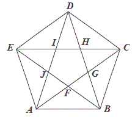
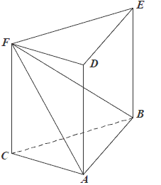

Matura 2012 czerwiec
Ułamek \(\frac{\sqrt{5}+2}{\sqrt{5}-2}\) jest równy
A.\( 1 \)
B.\( -1 \)
C.\( 7+4\sqrt{5} \)
D.\( 9+4\sqrt{5} \)
D
Liczbami spełniającymi równanie \(|2x + 3| = 5\) są
A.\( 1 \) i \(-4\)
B.\( 1 \) i \(2\)
C.\( -1 \) i \(4\)
D.\( -2 \) i \(2\)
A
Równanie \((x+5)(x-3)(x^2+1)=0\) ma:
A.dwa rozwiązania: \( x=-5, x=3 \)
B.dwa rozwiązania: \( x=-3, x=5 \)
C.cztery rozwiązania: \( x=-5, x=-1, x=1, x=3 \)
D.cztery rozwiązania: \( x=-3, x=-1, x=1, x=5 \)
A
Marża równa \(1{,}5\%\) kwoty pożyczonego kapitału była równa \(3000\) zł. Wynika
stąd, że pożyczono
A.\( 45 \) zł
B.\( 2000 \) zł
C.\( 200\ 000 \) zł
D.\( 450\ 000 \) zł
C
Na jednym z poniższych rysunków przedstawiono fragment wykresu funkcji
\(y=x^2+2x-3\). Wskaż ten rysunek. 
A
Wierzchołkiem paraboli będącej wykresem funkcji określonej wzorem \(f(x)=x^2-4x+4\) jest punkt o współrzędnych
A.\( (0,2) \)
B.\( (0,-2) \)
C.\( (-2,0) \)
D.\( (2,0) \)
D
Jeden kąt trójkąta ma miarę \(54^\circ\). Z pozostałych dwóch kątów tego trójkąta
jeden jest \(6\) razy większy od drugiego. Miary pozostałych kątów są równe
A.\( 21^\circ \) i \(105^\circ \)
B.\( 11^\circ \) i \(66^\circ \)
C.\( 18^\circ \) i \(108^\circ \)
D.\( 16^\circ \) i \(96^\circ \)
C
Krótszy bok prostokąta ma długość \(6\). Kąt między przekątną prostokąta i dłuższym
bokiem ma miarę \(30^\circ\). Dłuższy bok prostokąta ma długość
A.\( 2\sqrt{3} \)
B.\( 4\sqrt{3} \)
C.\( 6\sqrt{3} \)
D.\( 12 \)
C
Cięciwa okręgu ma długość \(8\) cm i jest oddalona od jego środka o \(3\) cm.
Promień tego okręgu ma długość
A.\( 3 \) cm
B.\( 4 \) cm
C.\( 5 \) cm
D.\( 8 \) cm
C
Punkt \(O\) jest środkiem okręgu. Kąt wpisany \(BAD\) ma miarę 
A.\( 150^\circ \)
B.\( 120^\circ \)
C.\( 115^\circ \)
D.\( 85^\circ \)
D
Pięciokąt \(ABCDE\) jest foremny. Wskaż trójkąt przystający do trójkąta \(ECD\)

A.\( \Delta ABF \)
B.\( \Delta CAB \)
C.\( \Delta IHD \)
D.\( \Delta ABD \)
B
Punkt \(O\) jest środkiem okręgu przedstawionego na rysunku. Równanie tego okręgu
ma postać: 
A.\( (x-2)^2+(y-1)^2=9 \)
B.\( (x-2)^2+(y-1)^2=3 \)
C.\( (x+2)^2+(y+1)^2=9 \)
D.\( (x+2)^2+(y+1)^2=3 \)
A
Wyrażenie \(\frac{3x+1}{x-2}-\frac{2x-1}{x+3}\) jest równe
A.\( \frac{x^2+15x+1}{(x-2)(x+3)} \)
B.\( \frac{x+2}{(x-2)(x+3)} \)
C.\( \frac{x}{(x-2)(x+3)} \)
D.\( \frac{x+2}{-5} \)
A
Ciąg \((a_n)\) jest określony wzorem \(a_n=\sqrt{2n+4}\) dla \(n\ge 1\). Wówczas
A.\( a_8=2\sqrt{5} \)
B.\( a_8=8 \)
C.\( a_8=5\sqrt{2} \)
D.\( a_8=\sqrt{12} \)
A
Ciąg \((2\sqrt{2},4,a)\) jest geometryczny. Wówczas
A.\( a=8\sqrt{2} \)
B.\( a=4\sqrt{2} \)
C.\( a=8-2\sqrt{2} \)
D.\( a=8+2\sqrt{2} \)
B
Kąt \(\alpha \) jest ostry i \(\operatorname{tg} \alpha =1\). Wówczas
A.\( \alpha \lt 30^\circ \)
B.\( \alpha =30^\circ \)
C.\( \alpha =45^\circ \)
D.\( \alpha >45^\circ \)
C
Wiadomo, że dziedziną funkcji \(f\) określonej wzorem \(f(x)=\frac{x-7}{2x+a}\)
jest zbiór \((-\infty ,2)\cup (2,+\infty )\). Wówczas
A.\( a=2 \)
B.\( a=-2 \)
C.\( a=4 \)
D.\( a=-4 \)
D
Jeden z rysunków przedstawia wykres funkcji liniowej \(f(x)=ax+b\), gdzie \(a>0\) i
\(b\lt 0\). Wskaż ten wykres. 
C
Punkt \(S = (2, 7)\) jest środkiem odcinka \(AB\), w którym \(A = (-1, 3)\). Punkt
\(B\) ma współrzędne:
A.\( B=(5,11) \)
B.\( B=\left (\frac{1}{2},2 \right) \)
C.\( B=\left (-\frac{3}{2},-5 \right) \)
D.\( B=(3,11) \)
A
W kolejnych sześciu rzutach kostką otrzymano następujące wyniki: \(6, 3, 1, 2, 5, 5\). Mediana tych wyników jest równa:
A.\( 3 \)
B.\( 3{,}5 \)
C.\( 4 \)
D.\( 5 \)
C
Równość \((a+2\sqrt{2})^2=a^2+28\sqrt{2}+8\) zachodzi dla
A.\( a=14 \)
B.\( a=7\sqrt{2} \)
C.\( a=7 \)
D.\( a=2\sqrt{2} \)
C
Trójkąt prostokątny o przyprostokątnych \(4\) i \(6\) obracamy wokół dłuższej
przyprostokątnej. Objętość powstałego stożka jest równa
A.\( 96\pi \)
B.\( 48\pi \)
C.\( 32\pi \)
D.\( 8\pi \)
C
Jeżeli \(A\) i \(B\) są zdarzeniami losowymi, \(B'\) jest zdarzeniem przeciwnym do
\(B\), \(P(A) = 0{,}3\), \(P(B') = 0{,}4\) oraz \(A\cap B=\emptyset \), to \(P(A\cup B)\) jest równe
A.\( 0{,}12 \)
B.\( 0{,}18 \)
C.\( 0{,}6 \)
D.\( 0{,}9 \)
D
Przekrój osiowy walca jest kwadratem o boku \(a\). Jeżeli \(r\) oznacza promień
podstawy walca, \(h\) oznacza wysokość walca, to
A.\( r+h=a \)
B.\( h-r=\frac{a}{2} \)
C.\( r-h=\frac{a}{2} \)
D.\( r^2+h^2=a^2 \)
B
Rozwiąż nierówność \(x^2 - 3x - 10 \lt 0\).
\(x\in (-2,5)\)
Średnia wieku w pewnej grupie studentów jest równa \(23\) lata. Średnia wieku tych
studentów i ich opiekuna jest równa \(24\) lata. Opiekun ma \(39\) lat. Oblicz, ilu studentów jest w
tej grupie.
\(15\)
Podstawy trapezu prostokątnego mają długości \(6\) i \(10\) oraz tangens jego kąta
ostrego jest równy \(3\). Oblicz pole tego trapezu.
\(P=96\)
Uzasadnij, że jeżeli \(\alpha\) jest kątem ostrym, to \(\sin^4\alpha + \cos^2\alpha
= \sin^2\alpha + \cos^4\alpha\).
Uzasadnij, że suma kwadratów trzech kolejnych liczb całkowitych przy dzieleniu
przez \(3\) daje resztę \(2\).
Suma \(S_n = a_1 + a_2 + ... + a_n\) początkowych \(n\) wyrazów pewnego ciągu
arytmetycznego \((a_n)\) jest określona wzorem \(S_n = n^2 - 2n\). Wyznacz wzór na \(n\)-ty wyraz
tego ciągu.
\(a_n=2n-3\)
Dany jest romb, którego kąt ostry ma miarę \(45^\circ\), a jego pole jest równe
\(50\sqrt{2}\). Oblicz wysokość tego rombu.
\(h=5\sqrt{2}\)
Punkty \(A = (2,11), B = (8, 23), C = (6,14)\) są wierzchołkami trójkąta. Wysokość
trójkąta poprowadzona z wierzchołka \(C\) przecina prostą \(AB\) w punkcie \(D\). Oblicz współrzędne
punktu \(D\).
\(D=(4,15)\)
Oblicz, ile jest liczb naturalnych pięciocyfrowych, w zapisie których nie występuje
zero, jest dokładnie jedna cyfra \(7\) i dokładnie jedna cyfra parzysta.
\(5120\)
Dany jest graniastosłup prawidłowy trójkątny \(ABCDEF\) o podstawach \(ABC\) i
\(DEF\) i krawędziach bocznych \(AD, BE\) i \(CF\) (zobacz rysunek). Długość krawędzi podstawy
\(AB\) jest równa \(8\), a pole trójkąta \(ABF\) jest równe \(52\). Oblicz objętość tego
graniastosłupa. 
\(V=176\sqrt{3}\)